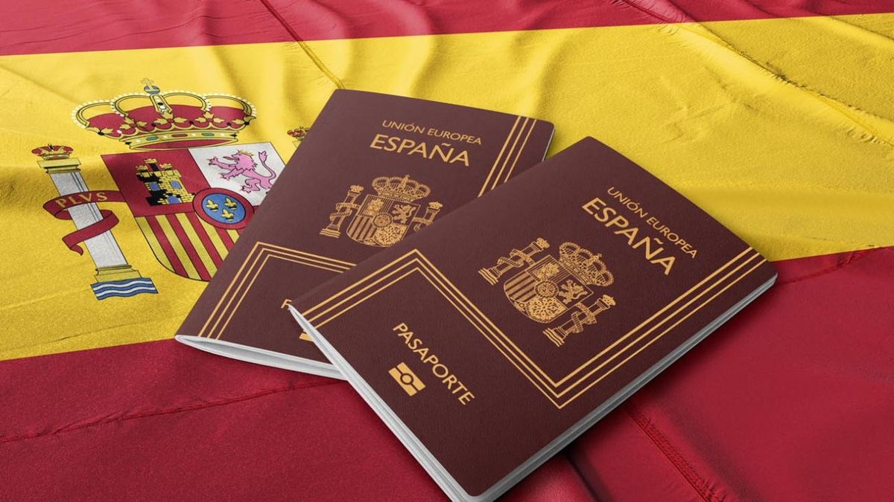
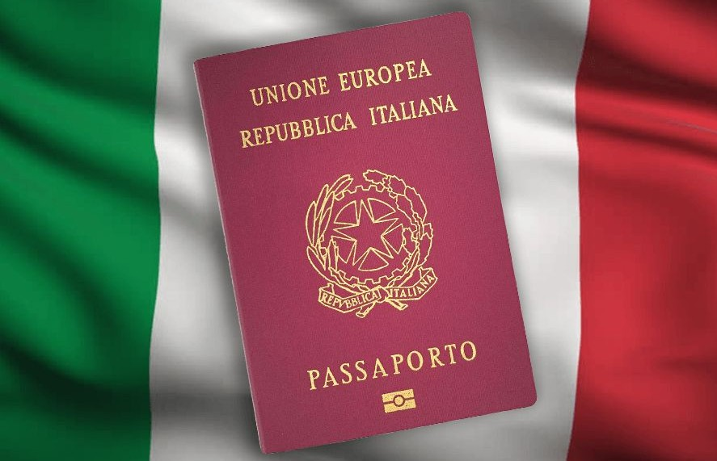

Ciudadanias Europeas
Sabemos que lidiar con trámites burocráticos puede ser engorroso, confuso y desgastante. Por eso estamos acá: para acompañarte en cada paso del proceso y hacer que todo sea más simple, claro y accesible.
Nuestros servicios incluyen:
- Búsqueda de partidas europeas
- Apostillas y legalizaciones
- Traducciones oficiales
- Armado completo de carpetas
- Rellenado y presentación de formularios
- Gestión de visas
- ¡Y mucho más!
¿Por qué elegirnos?
Contamos con más de 3 años de experiencia en el rubro. Hacemos un seguimiento personalizado desde el inicio hasta que tengas tu pasaporte en mano. Brindamos asesoramiento adaptado a tu caso, porque cada historia y cada trámite es único. Confíanos tu historia. Nosotros nos encargamos del resto.
¿Que podemos ofrecerte?
Ciudadania Española
Ciudadania Italiana
Ciudadania Polaca
Ciudadania Alemana
CONTRATANOS